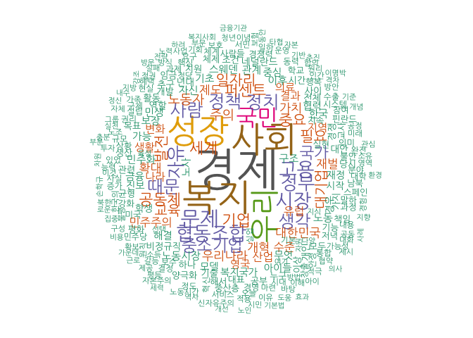

xwMOOC 기계학습
저녁이 있는 삶 – 손학규
학습목표
- 기본적인 한국어 텍스트 데이터 분석과정을 살펴본다.
- 손학규 전 민주당 대표가 저술한 저녁이 있는 삶, 책 데이터를 분석한다.
책 데이터 분석 작업흐름
텍스트 책 데이터를 분석하는 과정은 영문 텍스트를 분석하는 것과 크게 다르지 않는다.
- 텍스트 분석을 위한 기반 팩키지를 설치.
KoNLP,tm,wordcloud,RColorBrewerKoNLP팩키지가 의존성을 갖는RSQLite및rJava를 설치 및 설정
- 컴퓨터, 즉 R이 분석할 수 있도록 텍스트 데이터를 전처리.
- 시각화 및 고급 분석 기법을 통한 모형 개발
# install.packages("KoNLP")
# install.packages("RSQLite")
# Sys.setenv(JAVA_HOME='C:\\Program Files\\Java\\jre1.8.0_102') # for 64-bit version
# library(rJava)
# library(KoNLP)
# library(tidyverse)
# library(RColorBrewer)
# library(wordcloud)
# library(tm)
# library(stringr)KoNLP 팩키지
최근 KoNLP 팩키지가 버젼업되면서 기존 36만개 형태소가 120만개 형태소 사전을 갖게 되어 더욱 강력한 텍스트 분석이 가능해졌다.
# useNIADic()
useNIADic(which_dic = c("woorimalsam", "insighter"), category_dic_nms = "political", backup = T)Backup was just finished!
984210 words dictionary was built.
저녁이 있는 삶
저녁이 있는 삶 - 손학규의 민생경제론은 손학규 전 민주당 대표가 2012년 대선을 준비하면서 펴낸 책으로 김종인 민주당 의원 지금 왜 경제민주화인가 - 한국 경제의 미래를 위하여와 더불어 많이 회자되고 있는 책이다.
먼저 책 데이터를 불러온 다음, 한글 관련 내용만 추출하고 나서, 말뭉치 정제 과정을 거친다.
book <- readLines("data/저녁이 있는 삶.txt", encoding="UTF-8")
# http://stackoverflow.com/questions/9637278/r-tm-package-invalid-input-in-utf8towcs
book <- str_replace_all(book,"[^[:graph:]]", " ")
book <- str_replace_all(book,"[^[ㄱ-흫]]", " ")
book <- book[which(book != "")]
book_corpus <- sapply(book, function(x) {paste(extractNoun(x), collapse=" ")}, USE.NAMES=F)
#말뭉치 정제과정
book_corpus <- Corpus(VectorSource(book_corpus))
book_corpus <- tm_map(book_corpus, removePunctuation)
book_corpus <- tm_map(book_corpus, removeNumbers)
book_corpus <- tm_map(book_corpus, tolower)
book_corpus <- tm_map(book_corpus, stripWhitespace)
book_stopwords <- c(stopwords("english"), "되", "하면", "것", "그것", "음", "수", "들이", "한", "할", "있", "년", "하기", "하지", "하")
book_corpus <-tm_map(book_corpus, removeWords, book_stopwords)
book_corpus <-tm_map(book_corpus, PlainTextDocument)
book_tdm <- TermDocumentMatrix(book_corpus, control=list(wordLengths=c(2,Inf)))가장 많이 회자되고 있는 단어는 경제가 중심이고, 사회, 성장, 복지, 우리, 국민 순으로 체계적으로 정리된 것이 관찰된다.
#시각화---------------------------------------------------------------------
library(ggplot2)
book_term_freq <- rowSums(as.matrix(book_tdm))
book_term_freq <- subset(book_term_freq, book_term_freq >= 50)
book_term_df <- data.frame(term = names(book_term_freq), freq = book_term_freq) %>% arrange(desc(freq))
ggplot(book_term_df[1:20,], aes(reorder(term, freq), freq)) +
geom_bar(stat="identity") + coord_flip() +
ylab("단어 빈도수") +
xlab("")
m <- as.matrix(book_tdm)
wordFreq <- sort(rowSums(m), decreasing = TRUE)
pal <- brewer.pal(8, "Dark2")
wordcloud(words = names(wordFreq), freq = wordFreq, min.freq = 20, random.order = F,
rot.per = 0.1, colors = pal, family="NanumGothic")
저녁이 있는 삶 - 형태소 분석
형태소 분석기를 사용하는 과정은 적절한 형태소 분석기를 활용하여 한국어를 분석할 경우 유용하다. 몇가지 형태소 분석기가 존재하지만, 한국어의 복잡성으로 인해 그다지 만족스러운 결과를 가져다 주지 않고 있다. KAIST 품사 태그셋 SimplePos22 형태소 분석결과를 바탕으로 분석하면 다음과 같다. 보통명사만 뽑아내서 분석하는 과정은 다음과 같다.
book_lem <- sapply(book, SimplePos22, USE.NAMES = FALSE)
# NC 보통명사
book_lem_nc <- lapply(book_lem, function(x) grep("/NC", x, value=T))
book_lem_nc <- lapply(book_lem_nc, function(x) str_subset(x, "/NC$"))
book_lem_nc <- lapply(book_lem_nc, function(x) str_replace_all(x, "/NC", ""))
# NC 고유명사
book_lem_nq <- lapply(book_lem, function(x) grep("/NQ", x, value=T))
book_lem_nq <- lapply(book_lem_nq, function(x) str_subset(x, "/NQ$"))
book_lem_nq <- lapply(book_lem_nq, function(x) str_replace_all(x, "/NQ", ""))
book_corpus <- c(book_lem_nc, book_lem_nq)
#말뭉치 정제과정
book_corpus <- Corpus(VectorSource(book_corpus))
book_corpus <- tm_map(book_corpus, removePunctuation)
book_corpus <- tm_map(book_corpus, removeNumbers)
book_corpus <- tm_map(book_corpus, tolower)
book_corpus <- tm_map(book_corpus, stripWhitespace)
book_stopwords <- c(stopwords("english"),"이후", "없", "되", "하면", "것", "그것", "음", "수", "들이", "한", "할", "있", "년", "하기", "하지", "하")
book_corpus <-tm_map(book_corpus, removeWords, book_stopwords)
book_corpus <-tm_map(book_corpus, PlainTextDocument)
book_tdm <- TermDocumentMatrix(book_corpus, control=list(wordLengths=c(2,Inf)))
#시각화---------------------------------------------------------------------
library(ggplot2)
book_term_freq <- rowSums(as.matrix(book_tdm))
book_term_freq <- subset(book_term_freq, book_term_freq >= 20)
book_term_df <- data.frame(term = names(book_term_freq), freq = book_term_freq) %>% arrange(desc(freq))
ggplot(book_term_df[1:20,], aes(reorder(term, freq), freq)) +
geom_bar(stat="identity") + coord_flip() +
ylab("단어 빈도수") +
xlab("")
m <- as.matrix(book_tdm)
wordFreq <- sort(rowSums(m), decreasing = TRUE)
pal <- brewer.pal(8, "Dark2")
wordcloud(words = names(wordFreq), freq = wordFreq, min.freq = 7, random.order = F,
rot.per = 0.1, colors = pal, family="NanumGothic")